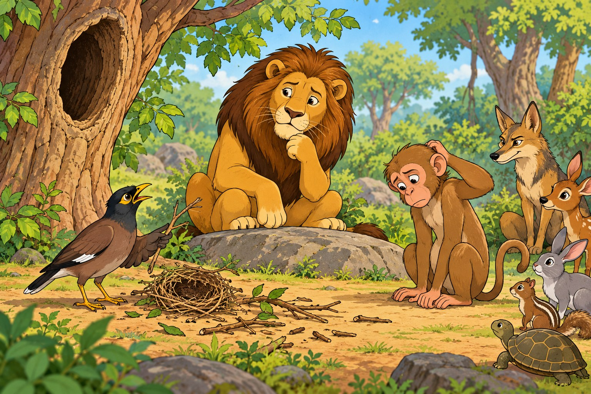

ବଣରାଇଜର କାହାଣୀODIA · 10 STORIES
ବଣରାଇଜର କାହାଣୀ
Paresh Kumar Pattanaik · Odia · 10 stories
Open bookSMALL CREATURES. BIG STORIES.
Two books to read slowly, one page at a time. Original stories by Paresh Kumar Pattnaik, with new illustrations.

ବଣରାଇଜର କାହାଣୀODIA · 10 STORIES
Paresh Kumar Pattanaik · Odia · 10 stories
Open book The Frog & the Mouse
The Frog & the MouseENGLISH · 13 STORIES
Translated by Namita Rani Panda · English · 13 stories
Open book